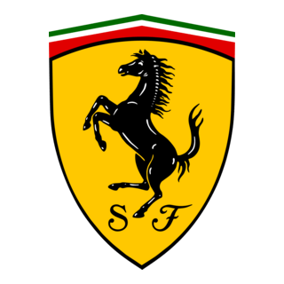

Michael Schumacher
5 títulos do campeonato de pilotos
75 vitórias em GP's
SCUDERIA FERRARI

A Scuderia Ferrari foi fundada em 1929 por Enzo Ferrari e tornou-se a equipe de corrida da Alfa Romeu. Em 1938, a Alfa Romeo tomou a decisão de entrar nas corridas com seu próprio nome, que institui a organização Alfa Corse, que absorveu o que tinha sido a Ferrari. Enzo Ferrari não concordou com esta mudança na política e foi, finalmente, demitido pela Alfa em 1939. Os termos de sua saída proibiu-o de participar do automobilismo em seu próprio nome, por um período de quatro anos.
Em 1950, o Campeonato Mundial de Fórmula Um foi estabelecido, e a Scuderia Ferrari entrou nesta primeira temporada. É a única equipe a ter competido em todas as temporadas do mundial, desde o início até os dias atuais. Na verdade, a equipe da Ferrari perdeu a primeira corrida do campeonato, o Grande Prêmio da Grã-Bretanha de 1950, devido a uma disputa sobre o "dinheiro inicial" pago aos participantes, a equipe estreou no Grande Prêmio de Mônaco de 1950 com a 125 F1, ostentando uma versão supercharger do 125 V12 e três experientes e bem-sucedidos pilotos, Alberto Ascari, Raymond Sommer e Luigi Villoresi. A equipe mudou mais tarde para motores naturalmente aspirados nos modelos 275, 340, e 375. A equipe Alfa Romeo dominou a temporada de 1950, ganhando todas os onze corridas que entrou (seis corridas do campeonato mundial e cinco corridas não oficiais), mas a Ferrari quebrou a hegemonia em 1951 quando o piloto argentino José Froilán González venceu o Grande Prêmio da Grã-Bretanha.
5 títulos do campeonato de pilotos
75 vitórias em GP's
2 títulos do campeonato de pilotos
15 vitórias em GP's
1 título do campeonato de pilotos
10 vitórias em GP's
Enzo Ferrari funda a Scuderia Ferrari em Modena, como equipe de corrida da Alfa Romeo.
Enzo Ferrari deixa a Alfa Romeo após um desentendimento e é proibido de correr com seu próprio nome por quatro anos.
Surge o primeiro carro a levar o nome Ferrari, a 125 S, construído na nova fábrica em Maranello.
A Scuderia Ferrari estreia no primeiro Campeonato Mundial de Fórmula 1, no GP de Mônaco.
José Froilán González conquista a primeira vitória da Ferrari na F1, no GP da Grã-Bretanha.
A Ferrari conquista seu primeiro título de Construtores da Fórmula 1.
Niki Lauda conquista dois títulos de pilotos pela Ferrari, consolidando a equipe como força dominante.
Michael Schumacher chega à Ferrari, dando início à reconstrução da equipe rumo ao topo.
Era dominante de Schumacher: cinco títulos de pilotos consecutivos e domínio quase total da categoria.
Kimi Räikkönen conquista o último título de pilotos da Ferrari até hoje; no ano seguinte vem o último título de construtores.
A Scuderia Ferrari HP segue como a equipe mais vitoriosa da história da Fórmula 1, em busca de voltar ao topo do mundial.
Mesmo estando na Fórmula 1 desde 1950 e sendo a mais vitoriosa da categoria, a Scuderia de Maranello não ganha o título mundial de pilotos desde de 2007 e o de contrutores desde de 2008. Já são 17 anos sem se sair vitoriosa, e nesse tempo viu suas principais rivais dominarem a cadegoria.
Outra curiosidade da equipe do Cavallo Empinado é de que a cada vitória da marca em alguma categoria do automobilismo, uma bandeira da equipe é asteada na frente de sua fábrica.
Acesse a página oficial da Ferrari para acompanhar as novidades e conquistas da equipe italiana:
Página Oficial da Scuderia FerrariVisite também a página do Instagram:
Instagram oficial da Scuderia Ferrari HP